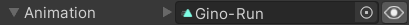

- A State contains the current information about an animation such as its
TimeandSpeed. - A Transition contains serializable data which defines how to create and play a state such as its
AnimationClipand the fade duration used to blend into it.
Each of the State types that are included in Animancer has its own Transition Type which contains various details relevant to it so that when it's passed into AnimancerComponent.Play(ITransition) it will create that type of state. For example, a ClipTransition will create a ClipState to play a single AnimationClip:
| Example Script | Inspector |
|---|---|
|
This is an inline transition, meaning it's stored directly inside the script where it's defined. The alternative is a Transition Asset which stores the transition in an asset where it can be referenced by multiple scripts. Each of these Fields is explained below. |
The Transitions sample demonstrates how to use them in more detail.
Fields
The following table describes the fields in a ClipTransition. See the Transition Types page for details about the other types.
| Name | Code | Inspector |
|---|---|---|
| Animation | Clip |
 |
|
The This field only exists on The name displayed here is actually determined by the transition field ( | ||
| Fade Duration | FadeDuration |
|
|
The amount of time that the transition will take to Cross Fade from the previous animation to the new one. This value can't be negative and setting it to 0 will cause the animation to Play Instantly. This Time Field is always serialized as seconds, regardless of which field you use to enter the value. | ||
| Speed | Speed |
|
How fast the animation will play as a multiple of its regular speed. Negative values cause it to play backwards (so you would likely want to set the Start Time to 1x to play it backwards from the end).
| ||
| Start Time | NormalizedStartTime |
 |
|
If enabled, the animation time will immediately jump to this value when played. Otherwise it will display a default value: | ||
| End Time | Events.NormalizedEndTime |
|
|
If enabled, this value determines when the End Event will occur. It does not affect the animation playback in any way other than to trigger that event. This Time Field is always serialized as normalized time, regardless of which field you use to enter the value. | ||
| Events | Events |
|
|
The timeline visualises the transition details:
| ||
Time Fields
Several of the above fields use Units Attributes to display a single time value using several fields to represent different units of measurement.
| Unit | Meaning | Examples |
|---|---|---|
Normalizedx |
A multiple of the animation length. | 0.5x is halfway through.1x is at the end. |
Secondss |
A number of seconds. | 0.5s is half of a second.1s is one whole second. |
Framesf |
Based on the animation's frame rate (not the game's frame rate). | 0.5f is half of a frame.1f is one whole frame. |
- Entering values in these fields works like any other number field. You simply type a number without the suffix.
- If the field has a toggle, disabling it will set the underlying value to
float.NaNwhich has different effects depending on the field (as explained in the Fields table and in the tooltip). - The Fields table also specifies which units the underlying value is actually stored as.
- The
AnimancerSettingsasset has options to disable any of the fields you don't want. For example, measuring values in "Frames" can be very useful forSpritebased animations, but is often less useful for bone based animations.
Approximations
Since the Time Fields only have limited screen space to work with, they often end up being unable to fit the entire value which can lead to confusion. To fix this, these fields will automatically abbreviate their values to fit in the available area and use a ~ symbol to indicate when the displayed value is only an approximation of the actual value. For example, all of the following values would normally look identical to 1.234568 if there wasn't enough room to see the rest of the text.
| Number | Value | Normally displays as | Approximation |
|---|---|---|---|
| Very Small | 0.00000012345678 |
1.234568e-07 (note the -07) |
0~ |
| Regular Number | 1.234568 |
1.234568 |
1.2345~ |
| Very Large | 12345678 |
1.234568e+07 (note the +07) |
1.23e+7 |
This feature can be disabled in the AnimancerSettings.
Default Values
Middle Clicking on any of the Time Fields will set it to its default value. Or if it was already at that value, doing so will set it to its secondary default value.
| Field | Primary Default | Secondary Default |
|---|---|---|
Fade Duration |
0.25s |
0s |
Speed |
1x |
-1x |
Start Time |
Auto (0x for positive Speed or 1x for negative Speed) |
|
End Time |
Auto (1x for positive Speed or 0x for negative Speed) |

| Transition Types | Each State type included in Animancer has its own Transition type. |
| Transition Assets | Transitions stored inside ScriptableObject assets. |
| Transition Libraries | Modify the fade duration of Transition Assets based on what the character was previously doing. |
| Transition Previews | See what a transition will look like without needing to enter Play Mode. |